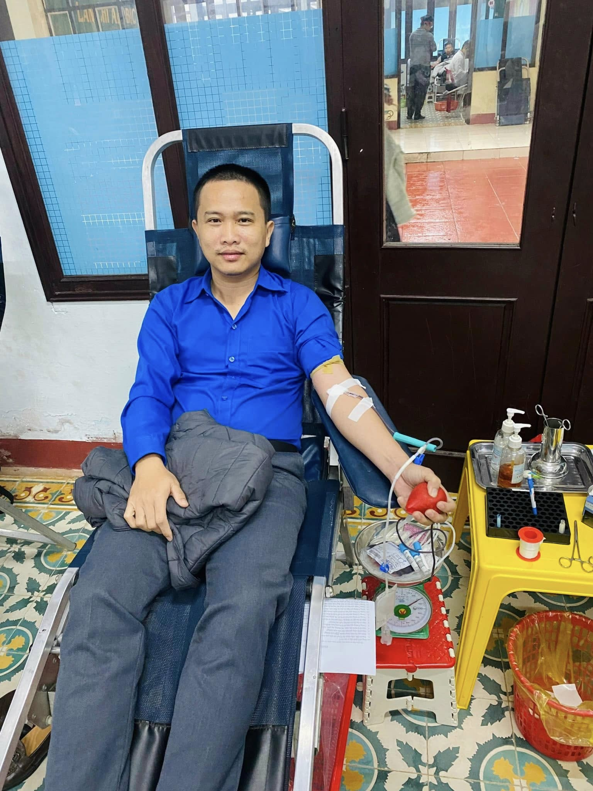
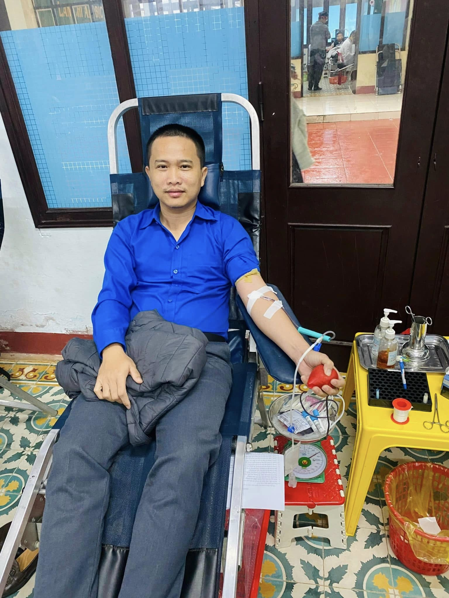

HOẠT ĐỘNG NỔI BẬT CỦA CÂU LẠC BỘ TÌNH NGUYỆN TRƯỜNG THPT TRIỆU PHONG
Câu lạc bộ Tình nguyện trường THPT Triệu Phong, tỉnh Quảng Trị, là một trong những tổ chức thiện nguyện sôi nổi và tích cực nhất trong các hoạt động vì cộng đồng. Với tinh thần “Lá lành đùm lá rách”, câu lạc bộ đã thực hiện nhiều chương trình ý nghĩa, góp phần giúp đỡ những hoàn cảnh khó khăn và lan tỏa giá trị nhân văn đến mọi người.
1. Chương trình "Xuân Yêu Thương"
Hằng năm, vào dịp Tết Nguyên Đán, Câu lạc bộ Tình nguyện tổ chức chương trình “Xuân Yêu Thương” nhằm quyên góp và trao tặng quà cho các hộ gia đình có hoàn cảnh khó khăn trên địa bàn huyện Triệu Phong. Những suất quà bao gồm gạo, bánh chưng, nhu yếu phẩm và tiền mặt đã giúp nhiều gia đình đón Tết ấm áp hơn.
2. Chiến dịch "Mùa hè xanh"
Hè đến, các thành viên trong câu lạc bộ lại tích cực tham gia chiến dịch “Mùa hè xanh” với nhiều hoạt động ý nghĩa như: hỗ trợ sửa chữa nhà cửa cho hộ nghèo, dọn dẹp nghĩa trang liệt sĩ, tổ chức các buổi sinh hoạt hè cho trẻ em vùng nông thôn. Chiến dịch không chỉ giúp đỡ cộng đồng mà còn rèn luyện tinh thần trách nhiệm và đoàn kết cho các bạn học sinh.
3. Hoạt động "Ngày Chủ nhật xanh"
Với mong muốn bảo vệ môi trường, câu lạc bộ thường xuyên tổ chức chương trình “Ngày Chủ nhật xanh” để dọn dẹp vệ sinh khuôn viên trường học, các khu vực công cộng như đường làng, bãi biển và bờ kè ven sông. Hoạt động này không chỉ góp phần làm đẹp môi trường sống mà còn nâng cao ý thức bảo vệ thiên nhiên cho học sinh.


4. Chương trình "Tiếp sức mùa thi"
Nhằm giúp đỡ các thí sinh trong kỳ thi tuyển sinh vào lớp 10 và kỳ thi tốt nghiệp THPT, câu lạc bộ triển khai chương trình “Tiếp sức mùa thi” với nhiều hoạt động thiết thực như: phát nước uống miễn phí, hỗ trợ tìm nhà trọ, hướng dẫn sơ đồ phòng thi và động viên tinh thần sĩ tử.
5. Hoạt động thiện nguyện tại Trung tâm Bảo trợ xã hội
Bên cạnh các hoạt động hỗ trợ cộng đồng địa phương, câu lạc bộ còn tổ chức các chuyến thăm và tặng quà tại Trung tâm Bảo trợ xã hội tỉnh Quảng Trị. Những phần quà nhỏ cùng những lời động viên, giao lưu văn nghệ đã mang lại niềm vui và sự ấm áp cho các cụ già neo đơn và trẻ em có hoàn cảnh đặc biệt.

6. Ngày hội hiến máu tình nguyện
Hưởng ứng phong trào hiến máu nhân đạo, Câu lạc bộ Tình nguyện trường THPT Triệu Phong phối hợp với các đơn vị y tế tổ chức ngày hội hiến máu tình nguyện. Sự kiện này thu hút đông đảo học sinh, giáo viên tham gia, góp phần cung cấp nguồn máu quý giá cho các bệnh viện trên địa bàn tỉnh Quảng Trị.
 

Những hoạt động của Câu lạc bộ Tình nguyện trường THPT Triệu Phong không chỉ thể hiện tinh thần tương thân tương ái mà còn giúp các bạn học sinh rèn luyện kỹ năng sống, trách nhiệm với cộng đồng. Hy vọng rằng trong thời gian tới, câu lạc bộ sẽ tiếp tục phát huy tinh thần xung kích, lan tỏa những giá trị tốt đẹp đến xã hội